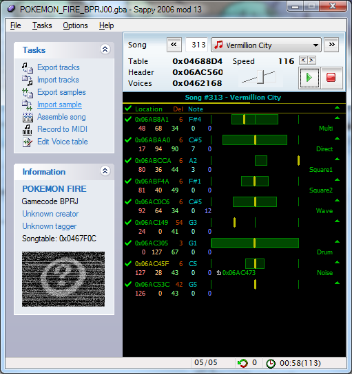
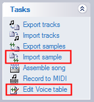
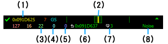
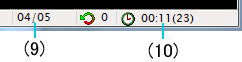
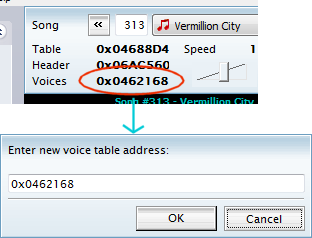

メイン画面について

メイン画面は、オリジナルに対していくつかの表示・機能を追加しています。
Task

メニュー項目として「Import Sample」と「Edit Voice table」を追加しています。各項目の説明は、それぞれのリンクをご覧ください。
トラック表示
オリジナルから、多くの項目が追加されています。

- (1) アドレス表示
- 演奏しているシーケンスデータの現在のアドレスが表示されます。オリジナルでは正しいアドレスを表示していなかったため、修正を行っています。
PATT によるパターン再生中は文字の色が変わります。パターンが入れ子になった場合、緑→黄→橙→赤の順に色が変わります。また、アドレスが拡張され 7 桁の 16 進表示となっています。
- (2) パンポット表示
- パンポット表示は以前からサポートしていましたが、ゲージ表示による左右中央の 3 方向だけでした。黄色いバーで左右にどれだけパンポットしているかを表します。
- (3) VOLUME 表示
- 現在の VOL 値が表示されます。 mod 12 までは LFOS 値でしたが、諸事情により変更となっています。ご注意ください。
- (4) Modulation 表示
- MOD 値(モジュレーションの深さ)が表示されます。数値が大きいほど振幅が大きく表現されます。
- (5) ピッチベンド表示
- ピッチベンドの強さが表示されます。表示される値は BENDR(Pitch Bend Range)と BEND(Pitch bend)を掛け合わしたもので、 64 で 1 半音分となっています。
- (6) PATT/PEND ジャンプ表示
- これが表示されている間は、 PATT/PEND によるパターン再生をしていることを表します。表示されているアドレスはジャンプ元アドレスです。パターンが入れ子になった場合、一番内側のループのジャンプ元アドレスが表示されます。
- (7) REPT リピート表示
- REPT 命令によるリピート再生中であることを表します。表示されている数値は、残り繰り返し回数です。
- (8) 出力デバイス表示 → 音色設定表示
- 出力デバイスの表示（Direct,Square1,Square2,Wave,Noise）を拡張し、音色の設定自体が表示されるようになりました。そのため、従来の表示に加え、「Multi」「Drum」が増えました。なお、 Drum や Multi 時は Direct 以外の出力が認められていません（無音になる）ので、そのような組み合わせの場合、表示が行われません。
ステータスバー

- (9) DS発音数/最大同時発音数
- 現在の DirectSound の使用チャンネル数と、最大同時発音数が表示されます。
- (10) 再生時間表示(小節数表示)
- オリジナルよりも項目の表示領域を大きめにしています。
また、小節表示が 48tick で +1 だったのを 24tick で +1 にしています。（ほとんどの曲で「24tick/ 小節」のため)
ボイステーブルのアドレス設定変更

ボイステーブル表示部をダブルクリックすると、現在表示している曲のボイステーブルのアドレスを変更することができます。
OK ボタンを押すと、その場で ROM イメージが書き換えられますのでご注意ください。